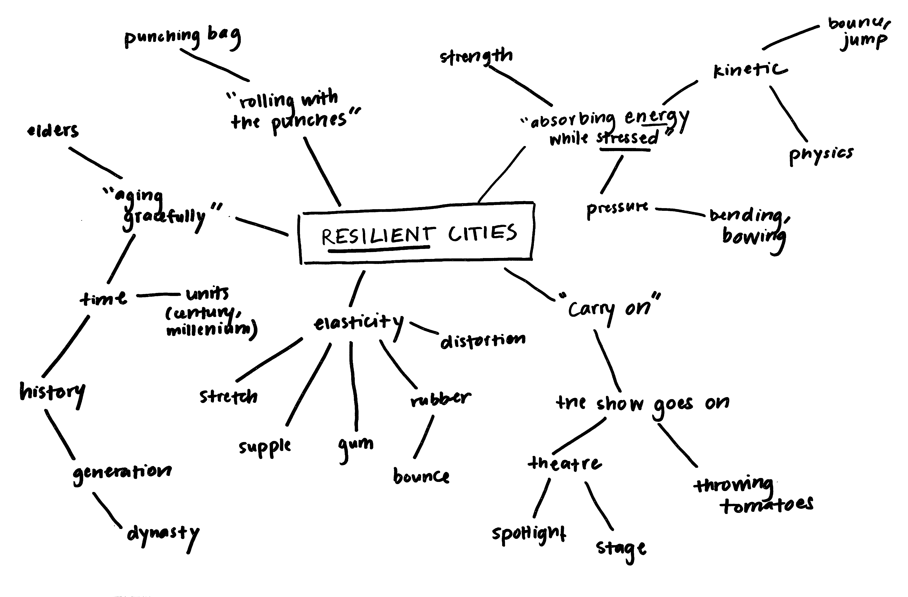
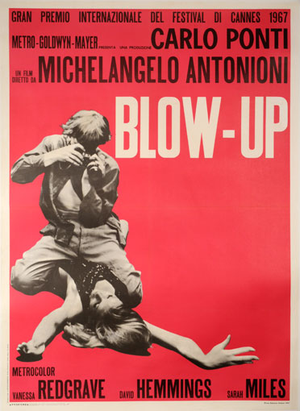

Minh-Anh Nguyen — Visual Designer
Conference Concept and Identity
Resilient Cities
The Challenge
I was tasked with conceiving a concept and visual identity for a fictional conference on architecture and/or urban design for Developing Design Solutions, a class taught by associate professor Annabelle Gould.
Armed with a bit of background knowledge of urban planning, I set about scouring the world wide web for a meaty discussion topic that would be both broad enough to inspire discussion, yet specific enough to facilitate a productive and engaging one.
What is a resilient city?
Urban resilience, something I discovered on The Atlantic’s Citylab, is exactly what I described in the introduction to this project. It’s the ability of cities to be able to withstand both chronic and acute stresses—the ability of cities to survive and adapt even when faced with high unemployment or a natural disaster (chronic and acute, respectively).
There’s a huge amount of new and exciting research and projects about resilient cities, from the Rockefeller Foundation’s 100 Resilient Cities project to the Center for Resilient Cities research lab in Wisconsin.
A lot of discussion about resilient cities can be abstract, complex, and able to be approached from a variety of perspectives. I felt it was important to shy away from defining what is or is not relevant to this conference in my visual identity design. My challenge became to communicate the concept of resilience in a succinct but open-ended way.
To do this, I focused on the definition of resilience. A resilient person is able to persevere in the face of trials and tribulations. A resilient city continues to thrive despite the stresses and shocks the city might encounter. If you’re resilient, then no matter what, the show will go on. 
From this, a concept was born.
The Solution
Inspired by the theatre posters of yesteryear, I used a sans-serif typeface with a variety of widths, used together to create blocky chunks that appear strong even when crumpled, burnt, or pelted with various perishable foods. The identity parallels the versatility of the idea of city resilience.
— designed and developed by Minh-Anh Nguyen 2016
minhanhvnm@gmail.com